Joining a Windows 10 Client to an Active Directory Domain
This is part 2 of my home lab series. In part 1, I set up a Windows Server 2022 Domain Controller with Active Directory. Now I'm adding a Windows 10 client machine to that domain — so I can practice the full helpdesk experience from both sides: the admin side and the user side.
// 01. Installing Windows 10 in VirtualBox
I downloaded the Windows 10 ISO using Microsoft's Media Creation Tool — free, official, no product key needed for the lab. I created a new VM in VirtualBox named CLIENT01, attached the ISO, and let it install. The setup process is straightforward — select language, choose "Custom install," pick Windows 10 Pro (not Home — Pro supports domain join), and wait.
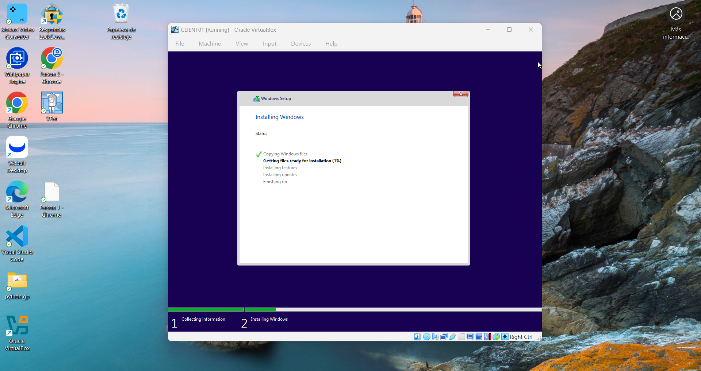
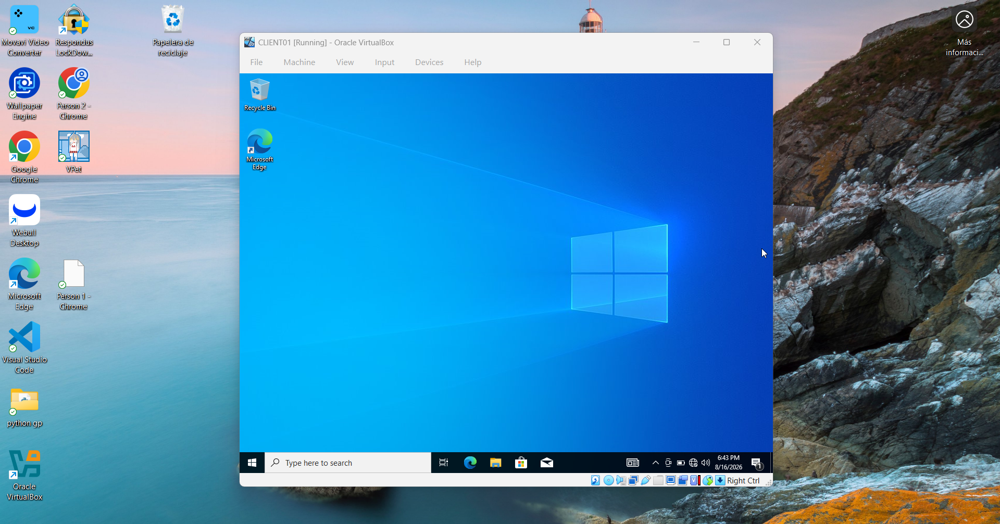
// 02. Configuring the Network
For CLIENT01 to talk to the Domain Controller, both VMs need to be on the same internal network. I changed both adapters from NAT to Internal Network in VirtualBox, using the same network name: intnet.
Then I gave CLIENT01 a static IP. The key detail here is the DNS server — I pointed it to 192.168.1.10, which is the IP of DC01. This is what lets the client find and communicate with the domain.
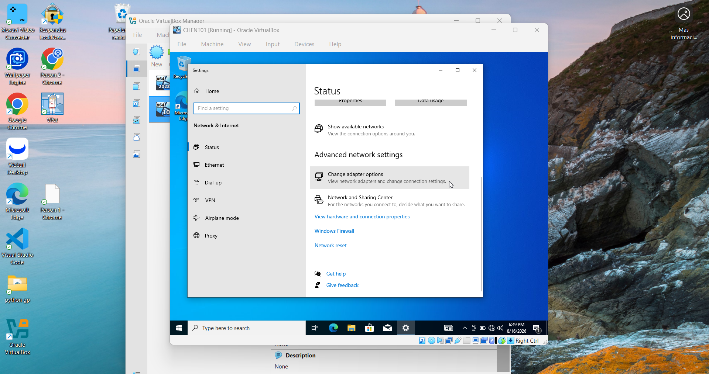
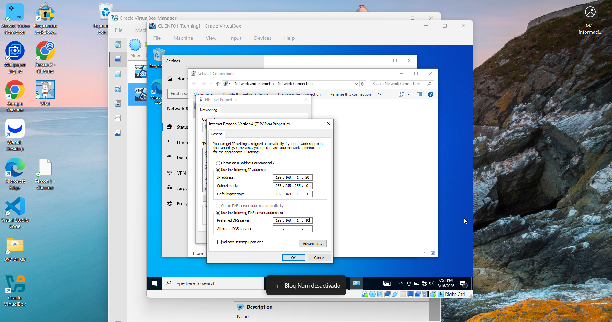
// 03. Verifying Connectivity
Before joining the domain, I verified that CLIENT01 could actually reach the server. From the Command Prompt on DC01, I pinged 192.168.1.10 — the server's own IP. 4 packets sent, 4 received, 0% loss. The internal network was working.
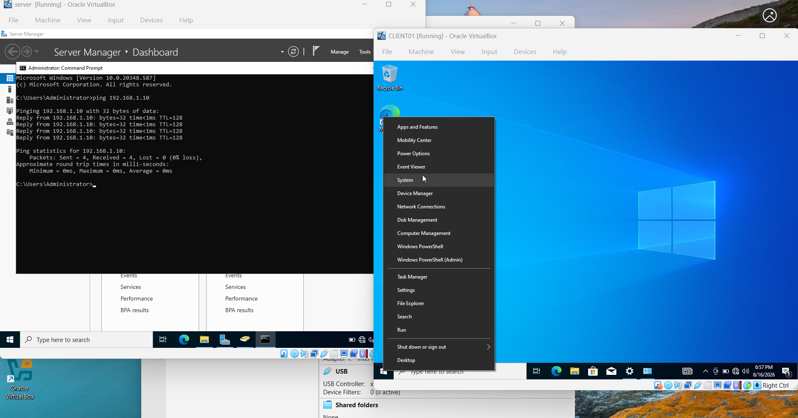
// 04. Joining the Domain
To join a Windows 10 machine to a domain, you go to System Properties → Computer Name tab → Change. I entered corp.local as the domain name and provided the Administrator credentials from the Domain Controller. A few seconds later — "Welcome to the corp.local domain." Then a reboot.
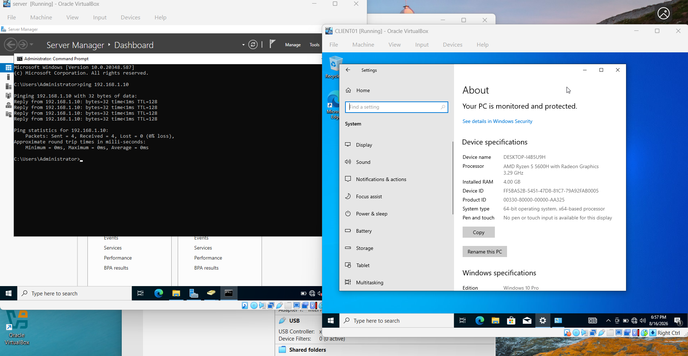
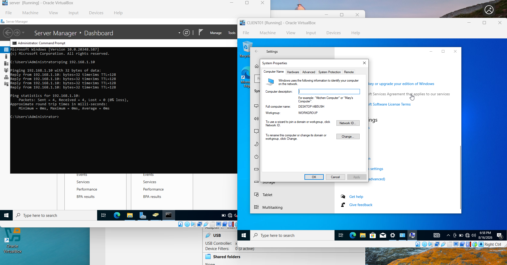
// 05. Logging in as a Domain User
After the reboot, the login screen showed something new: "Sign in to: CORP" and an "Other user" option. That's the domain. I clicked Other user and typed CORP\jsmith with John Smith's password — the same account I created in Active Directory during the first lab.
It worked. The desktop loaded with John Smith's profile. That's exactly what happens when an employee logs into their work computer for the first time.
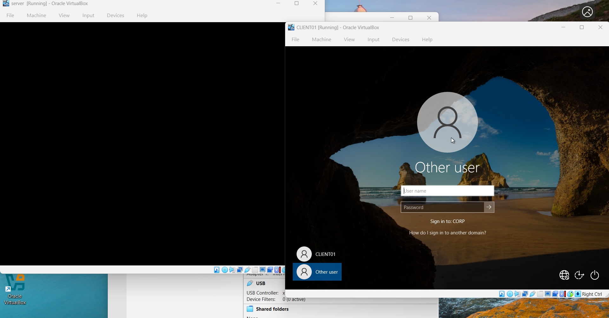
// 06. Confirming Everything Worked
Once logged in as jsmith, I opened Command Prompt and ran a few commands to confirm everything was set up correctly.
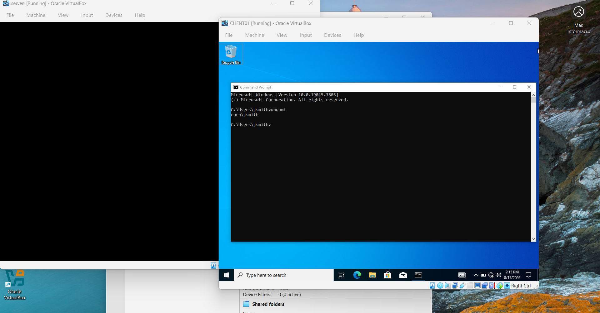
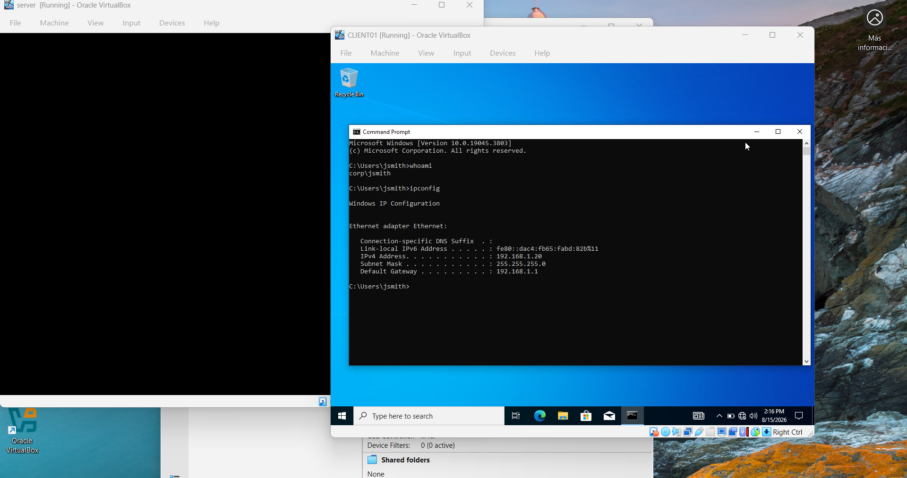
The last test was pinging the domain controller by name instead of IP. If DNS is working correctly, ping dc01 should resolve to dc01.corp.local automatically.
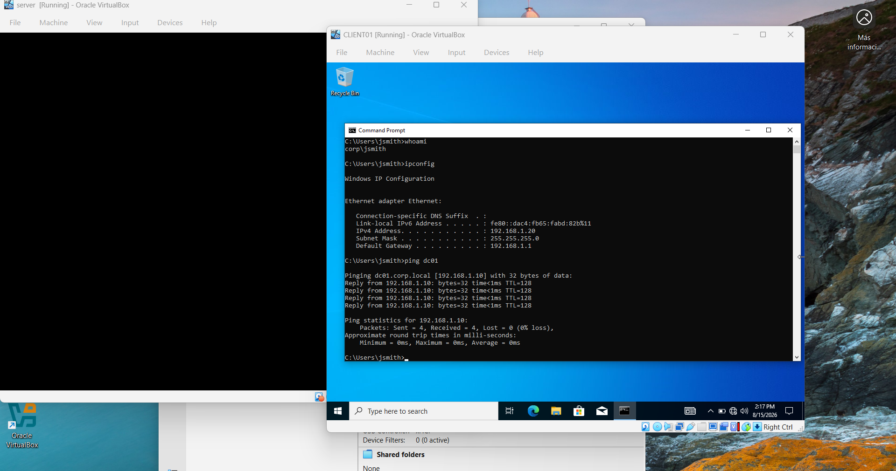
// What I Took Away
Doing this made me understand something that's easy to miss when you're just reading about it: the DNS configuration is everything. Without pointing CLIENT01's DNS to the Domain Controller, the domain join would have failed. The machine wouldn't know where to find corp.local.
It also made the first lab feel more real. Before, I had users in Active Directory but no machine to log into. Now I can actually simulate a full helpdesk scenario — a user calls saying they can't log in, I reset their password in AD, and they can try again on CLIENT01. That's the complete picture.